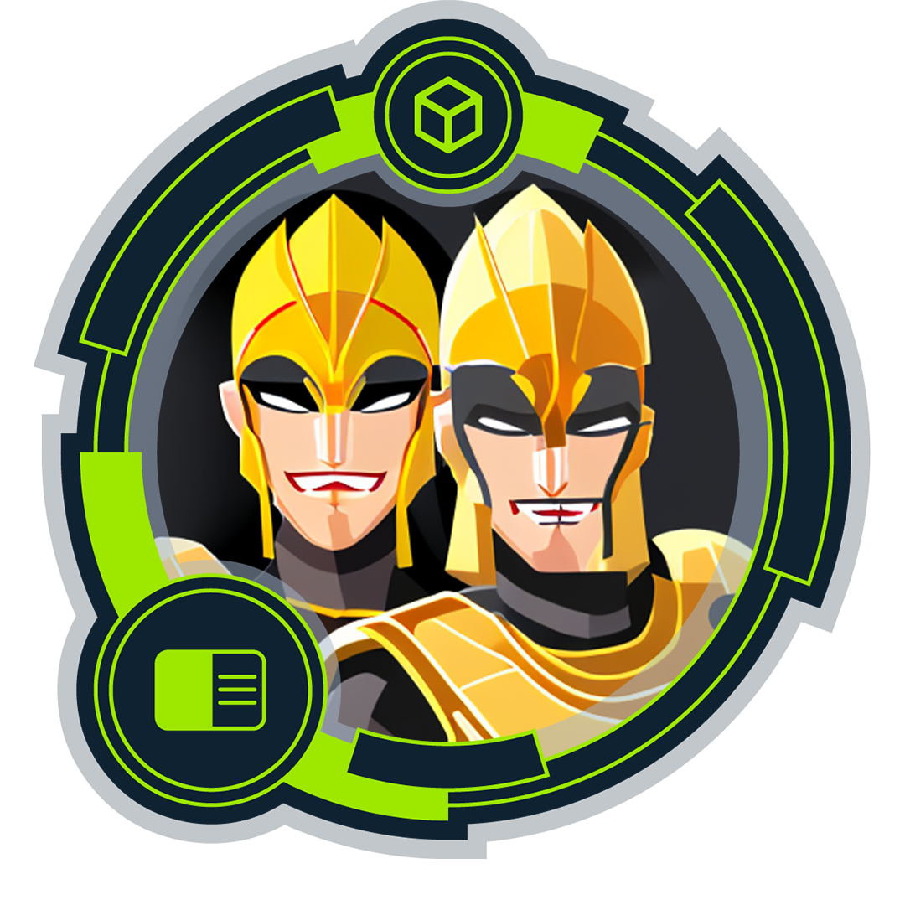
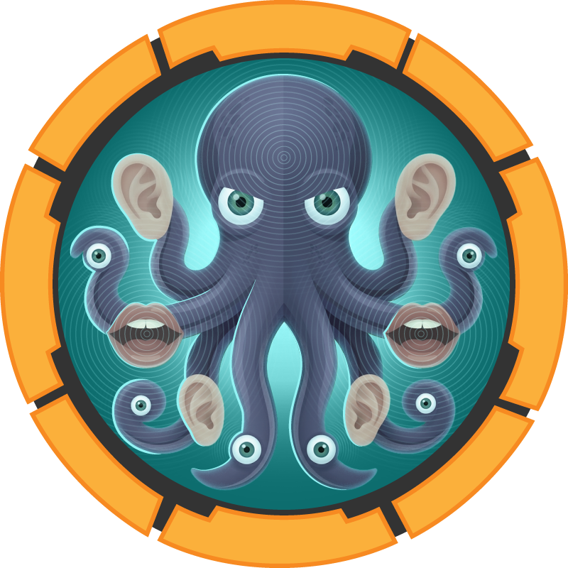
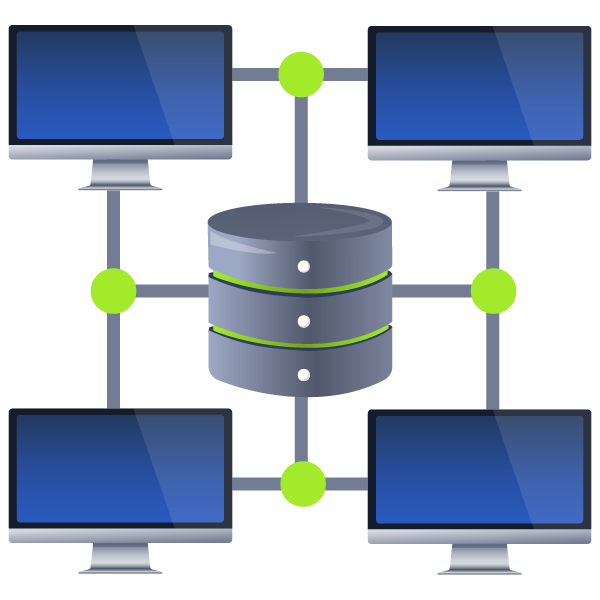

@Lanky
Cyber Security Analyst. Bridging offensive & defensive security.
Army veteran · CTF operator
Defence-aligned cyber analyst across threat hunting, vulnerability management, compliance (NIST 800-171/172, DISA STIGs) and security monitoring with Splunk and Tenable. I run offensive labs on Hack The Box and TryHackMe to sharpen attacker tradecraft — enumeration, exploitation, privilege escalation, Active Directory attacks and web app testing — and feed those lessons straight back into stronger detection and hardening.
Offensive
Defensive & GRC
Badges
47 earned across HTB Academy, TryHackMe and HTB Labs.





Certifications
Hands-on, assessment-based security certifications and training.
Certified Defensive Security Analyst (CDSA)
SOC operations, threat hunting, SIEM (Splunk & ELK), DFIR, AD attack detection, malware analysis — live enterprise assessment + incident report.
Certified Penetration Testing Specialist (CPTS)
Penetration-testing pathway: recon, exploitation, web & AD attack paths, Windows/Linux privesc, pivoting, lateral movement, and professional reporting.
Falcon 202 — Investigating & Querying Event Data with Falcon EDR
Endpoint detection & response: querying event data, threat hunting, and incident analysis with Falcon real-time response.
Certificate IV — Security & Risk Management
CPP40707 — risk management, security operations and protective security practice.
MORE CERTIFICATIONS & TRAINING
Full list & credentials on LinkedIn ↗.
Hacking Lab
4 HTB machines, 16 TryHackMe rooms. Write-ups and video walkthroughs are linked on each lab, where done.
▚ Hack The Box — Machines

MakeSense
Access-control gap in a custom app → file write into a root-owned path.

Reactor
Next.js React Server Components RCE → root via an exposed Node.js inspector.

Connected
FreePBX CVE-2025-57819 → root via an incron / sysadmin signed-hook chain.
Paperwork
LPD command injection → PJL traversal → SSH key injection → root via a leaked privileged file descriptor.
Bedside
pdfminer pickle RCE → container pivot → root via a sudo-run PyTorch checkpoint.
Support
Anon SMB → decompiled binary → LDAP → RBCD → SYSTEM.
CCTV
Default creds → creds in shell history → forged auth signature.

Nexus
Retired · Linux.
◆ TryHackMe — Rooms
Documented · writeup + video
Relevant
SMB webshell → SeImpersonate → SYSTEM.
Jurassic Park
Manual union-based SQL injection.

Kenobi
ProFTPd mod_copy + NFS → SUID path hijack.
Blue
EternalBlue (MS17-010) → SYSTEM.
Also completed

▶ Technique & Tutorial Videos
Non-lab-specific demos from my channel, Lanky's Networking.
Projects
Things I've built and run.
A self-hosted infosec news & threat-intelligence dashboard that tracks security events as they break. It pulls together new CVEs & vulnerabilities, data-breach reports, threat-actor activity and general infosec — alongside live social feeds (Mastodon, Bluesky, Reddit) — into one continuously-updating board.
I built it to stay ahead of emerging threats and feed real-world context straight into my defensive work — threat hunting, vulnerability management and detection engineering. It's the "what's happening right now" layer I check before the day starts.
▸ Open Cyber Deck ↗ ▸ Full detailsA Splunk Enterprise deployment that ingests Tenable vulnerability & hardening scan data and turns it into an operational security picture. I built a custom "Tenable Hardening — 12-Month View" dashboard with an OS-filtered drill-down, per-host compliance trends and high-risk-finding tracking over time.
It mirrors a real vulnerability-management workflow — pull findings from Tenable, index them in Splunk, and report on remediation progress and hardening posture. Exactly the SIEM + VM tooling I work with on the defensive side.
▸ Full detailsAn autonomous, multi-agent operations team that monitors and self-heals my home-lab around the clock. Eight specialist agents — security, DNS, networking, containers, backups, updates, media and NAS — run on their own schedules under a manager agent, with a WhatsApp "L1 service desk" for alerts and chat.
They run health checks, catch configuration drift, remediate common failures automatically and log every change — a practical take on AIOps / SOC automation, structured as an L1 → L2 → L3 IT team.
▸ Full detailsA production-style self-hosted server running 35+ Docker containers across a dozen compose stacks on Ubuntu. Fronted by Nginx Proxy Manager with TLS, Cloudflare Tunnels for zero-open-port ingress, a WireGuard VPN for remote access and Pi-hole for network-wide DNS filtering.
It's my hands-on lab for Linux administration, containerisation, networking and defensive hardening — reverse proxies, segmentation, secrets, NAS backups and monitoring. Everything the day job touches, run for real at home.
▸ Full detailsA fully self-hosted AI stack — Ollama serving local models on a GPU, with Open WebUI as the chat front-end. No data leaves the network, so it's a private sandbox for running models, testing prompts and building the automation that drives my agent team.
▸ Full detailsA locally-controlled smart-home platform built on Home Assistant, bridging Matter, Zigbee (Zigbee2MQTT) and MQTT devices through a Mosquitto broker. Automations, dashboards and app control — all kept on-network rather than in vendor clouds.
▸ Full detailsA self-hosted media streaming platform built on Jellyfin — my own media library, transcoded on the GPU and streamed to any device on the network, with Jellyseerr as a friendly "request a title" front end. A full replacement for a commercial streaming subscription, running entirely on my own hardware.
▸ Full detailsA self-hosted WordPress site on a containerised stack — WordPress on PHP 8.3 behind an Nginx front end with a MariaDB backend, deployed with Docker Compose and published through the same reverse-proxy / tunnel setup as the rest of the lab.
▸ Visit australianhomestead.com ↗ ▸ Full detailsThe site you're reading — a hand-built, zero-dependency static portfolio hosted on GitHub Pages. Documents my Hack The Box & TryHackMe machines, HTB Academy progress, certifications and video walkthroughs, with live-synced platform stats and per-lab writeups.
⌥ GitHubAutomation & Scripts
41 scripts that run my home lab — security scanning, self-healing, an autonomous agent framework, and ops automation. Click any script name to read the full source. These are the real, running scripts — I've only replaced secrets (tokens, IDs, phone numbers) with placeholders.
🛡️ Security & hardening 9
Blue-team automation — scanning, auditing and fail-safe controls.
[PASS]/[FAIL] per control.@Recycle area with a JSON audit trail instead of ever hard-deleting.🤖 AI agent framework 6
The orchestration layer behind the agent ops team.
📈 Monitoring & self-healing 8
Detect → remediate → report, delivered to my phone.
💾 Storage & NAS 7
Keeping a 21 TB NAS healthy and tidy.
safe-recycle, never a hard delete).🎬 Media library 1
Quality checks for the Jellyfin library.
💽 Backups & updates 4
Reproducibility and staying patched.
.env files to the NAS with retention — the "rebuild from scratch" safety net.🔔 Notifications & bots 3
How the lab talks back to me.
🔧 Infrastructure utilities 3
Small fixers that keep the plumbing working.